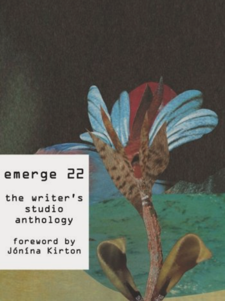
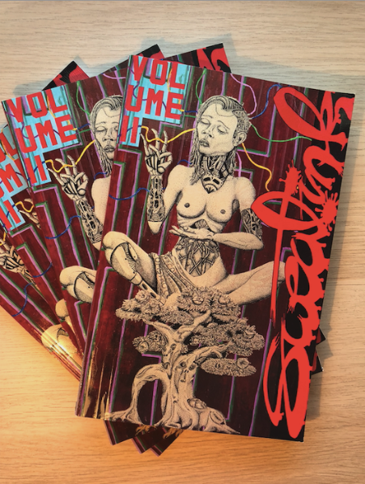

One day I hope to publish novels and produce a screenplay.
Publication Credits
emerge 22 the writer's studio anthology.
Foreword by Jonina Kirton

SFU Publications, October 2022
My work is included in this anthology book with 90 other writers from
the 2022 cohort of Simon Fraser University’s The Writer’s Studio. My
piece is an excerpt from my travels in Barbados.
My anthology piece is part of my in-progress food memoir, a narrative
non-fiction collection of essays about foods which influenced my
values and outlook or played a role in scenes from my life.
Varsity Writing Team: Sweat.Ink Magazine Series
Volume II, First Printing, April 2017

The Varsity Writing Team presents: Sweat.Ink, a contemporary fiction
magazine. My short story “Socialism and Robots” is one of 11 works by
Vancouver-based writers on themes of technology.